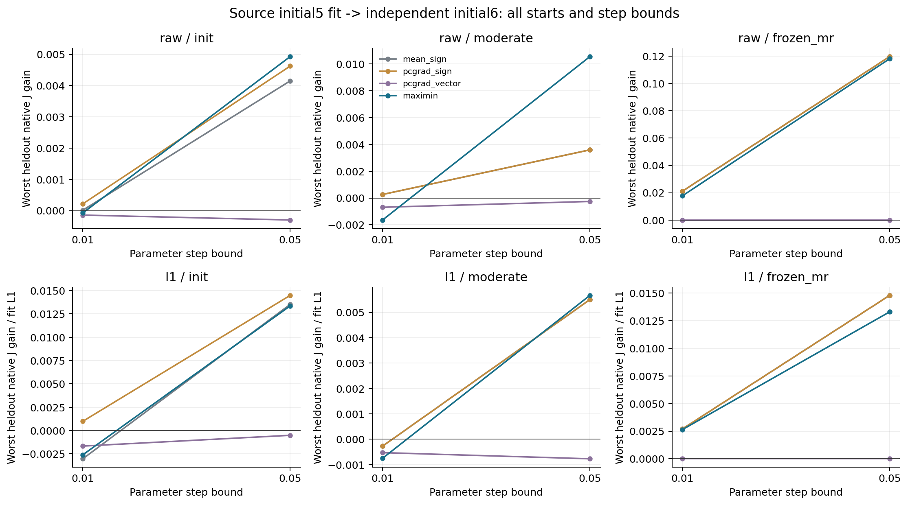
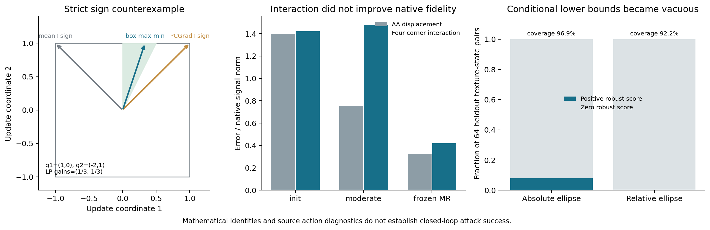

2026年10月31日 · math-innovation-20261031 · 起点提交 f892860
RefCloth：从数学构造到真实原生更新
实验范围与可比较性
所有新模型实验只查询冻结的源OpenVLA-OFT。初态5的四个任务{0,2,6,8}提供梯度，初态6的同四任务仅做独立原生验证。三种固定纹理起点、两种参数步长上限和12种更新策略，共288条验证记录；它们来自四个保留状态，不是288个独立场景。旧locked_test未读取，没有用目标策略选择新纹理。
GPU0和GPU2并行运行完整源模型，GPU1单独运行动作头缓存分析；GPU4未使用。09当时显存与计算均繁忙，用于同步和CPU复核。完整模型的峰值分配显存约19.08GB。所有新数学组件22项测试通过。零扰动PNG逐像素恢复、原生A/A、A→B→A以及输入时点检查均通过；八个新源状态的旧obs与实时渲染差异均为0。
动作端点固定为前五个执行动作的三个平移坐标。按生产q01/q99做仿射反归一化，三轴scale约为(0.84149,0.76875,0.93482)；偏移在差分中抵消。它们是控制量，不是米制轨迹误差，也不是任务成功率。
尝试一：最终执行更新盒中的共同上升
原问题是一个静态纹理要同时影响多任务，而平均梯度可能牺牲个别任务。常见多目标梯度在L2空间中组合后再取sign，也不能无条件保留共同上升。下面给出严格反例，不依赖VLA实验：
g₁ = (1,0), g₂ = (−2,1), δ ∈ [−1,1]² 平均梯度的sign：δ = (−1,+1)，任务1增益 = −1 PCGrad后再sign：δ = (+1,+1)，任务2增益 = −1 最终盒内的max–min原始解：δ = (1/3,1)，两任务增益均为1/3
因此直接求下式并保留原始分数坐标，而不是再次sign：
max δ,t t
subject to qᵢᵀδ ≥ t for every task i
max(−η,−5−θⱼ) ≤ δⱼ ≤ min(η,5−θⱼ)
q可为原始总目标梯度，也可按该任务fit梯度的L1范数归一化。总目标保留生产正则：J=10FD−0.1幅度MSE−0.1纹理TV。零梯度任务不删除；没有正共同上升裕量时不执行任意LP端点步。对fit中完全无梯度的坐标固定零更新，避免用求解器的任意解注入无目的纹理。
数学成果是明确原始/对偶形式、可检查的对偶间隙、sign丢共同上升的反例，以及条件性原生增益界。存在最优基本解只需至多N−1个非端点自由坐标；固定坐标不计入该性质。它们是标准凸优化和线性规划的应用，不作为全新数学理论。原论文匹配参考命题讨论的是一个固定目标的局部sign优势，本反例不推翻那个命题。
原生结果：原始梯度版通过 2/6 组设置，归一化版通过 1/6；预设要求至少4/6。强对照包含均值sign、PCGrad后sign及保留方向的PCGrad向量。下表完整列出所有起点、步长与尺度。两个基线列分别取三种基线在该指标上的上包络，不一定来自同一策略。归一化行用对应fit任务L1尺度换算保留状态的原生J增益；没有在保留集重估尺度。
| 起点 | 步长上限 | 分组尺度 | 基线中最大的最差增益 | LP最差增益 | 基线中最大的平均增益 | LP平均增益 | 单组判门 |
|---|---|---|---|---|---|---|---|
| 初始化 | 0.01 | raw | 0.000216505 | -7.41151e-05 | 0.000441214 | 0.000246072 | 未通过 |
| 初始化 | 0.01 | l1 | 0.000994973 | -0.00259226 | 0.00238487 | 0.000622001 | 未通过 |
| 初始化 | 0.05 | raw | 0.00462438 | 0.00492815 | 0.00979332 | 0.00889925 | 通过 |
| 初始化 | 0.05 | l1 | 0.0144759 | 0.0133507 | 0.106385 | 0.106791 | 未通过 |
| 中幅度纹理 | 0.01 | raw | 0.000261911 | -0.00164248 | 0.00282221 | 0.00115053 | 未通过 |
| 中幅度纹理 | 0.01 | l1 | -0.000270894 | -0.000749865 | 0.000652839 | 0.00084038 | 未通过 |
| 中幅度纹理 | 0.05 | raw | 0.00359069 | 0.0105496 | 0.0155609 | 0.022261 | 通过 |
| 中幅度纹理 | 0.05 | l1 | 0.00550059 | 0.00566783 | 0.0084824 | 0.00839289 | 通过 |
| 冻结MR纹理 | 0.01 | raw | 0.0210603 | 0.0176748 | 0.0336159 | 0.0240666 | 未通过 |
| 冻结MR纹理 | 0.01 | l1 | 0.0026972 | 0.00263875 | 0.00487139 | 0.00453438 | 未通过 |
| 冻结MR纹理 | 0.05 | raw | 0.119775 | 0.118186 | 0.141724 | 0.127898 | 未通过 |
| 冻结MR纹理 | 0.05 | l1 | 0.0147905 | 0.0132985 | 0.0195798 | 0.0186684 | 未通过 |
局部正例值得保留：中幅度起点、η=0.05时，raw LP的最差原生J增益约0.01055，对照为0.003591；均值约0.02226，对照为0.01556。冻结MR起点上的均值反而降低，不能仅挑中幅度结果。未通过跨设置门槛，因此没有据此启动完整训练。

尝试二：四角交互作为渲染误差不变量
在固定状态、指令和机器人输入下，分别组合Plain与扰动图像，定义：
I = a_AA − a_AP − a_PA + a_PP
若合成与原生的动作误差可写为任意可加形式E(u,v)=b+e₁(u)+e₂(v)，四角差分会精确消掉它。在“对所有这类未知偏差不变、且AA系数固定为1”的线性对比中，(1,−1,−1,1)是唯一解。它提供了一个明确的辨识问题，而不只是任意加损失。
同时，||联合位移||≥max(0,||I||−||主视角单独位移||−||腕视角单独位移||)。因此，只有交互足够大且单视角效应受控，才有有用的联合动作下界。对于光滑理想模型，I可表示为混合Hessian的二重积分；实际PNG量化和BF16不自动满足光滑假设。即使交互误差的绝对量是二阶，I本身也可能二阶小，不能推出相对误差改善。
实验结果：12个fit状态—起点组合中，整体动作位移相对误差0.3317，而交互相对误差0.5496，反而约为1.66倍；原生交互近零的排除数为0。按起点如下，未通过预设的保真门。
| 起点 | 普通AA位移相对误差 | 四角交互相对误差 | 原生交互RMS<1e-6数量 |
|---|---|---|---|
| 初始化 | 1.3968 | 1.4223 | 0 |
| 中幅度纹理 | 0.7560 | 1.4798 | 0 |
| 冻结MR纹理 | 0.3243 | 0.4199 | 0 |
| 全部起点，按信号能量汇总 | 0.3317 | 0.5496 | 0 |
进一步仍做了诊断性原生一步对照：直接联合动作、纯交互、单视角惩罚、对所有fit单视角一阶变化施加约束的LP。独立初态6上，受保护交互未在任何一组设置中达到“至少3/4状态联合效应增加10%，且双单视角MSE不增加超过1e−8”的门；六组均未通过。有些设置减少了单视角效应，却同时减少联合效应，不能叫联合失效。全部动作下界与交互前后值保留在验证JSON中。几何路线的策略共用同一批源梯度；融合路线只作相同步长诊断，各目标的反传次数不同，没有声称计算量匹配的性能优势。
尝试三：动作空间误差椭球与精确最坏情形
由旧源缓存拟合原生与合成动作位移误差的二阶矩，并分离形状拟合状态和半径校准状态。比较绝对半径、随位移幅度缩放的相对半径，以及广义特征值度量对照：
Lrob(u) = min e ||u+e||² subject to eᵀC⁻¹e ≤ r(u)² 绝对版 r(u)=ρ；相对版 r(u)=ρ||u|| 相对版包络梯度 = 2(y* − μρ²u)
内层最优解通过一个单调标量根方程精确求得。相对半径依赖u，不能漏掉梯度中的第二项。数值检查覆盖KKT、可行性、有限差分、齐次性和条件下界。下界只在真实误差属于拟合椭球时成立；有限源随机纹理的经验覆盖不认证未来优化纹理。
64个验证状态—纹理对：绝对版覆盖96.9%，但59/64分数为零；相对版覆盖92.2%，64/64分数为零。覆盖样本中没有条件下界违例，但相对版没有可用方向。广义特征度量的平均状态内排序相关约0.588，低于直接动作位移约0.688，未提供强于直接动作基线的证据。
| 方法 | 零分数/64 | 全零状态/16 | 可定义排序状态/16 | 并列公平选择的原生能量均值 | 全状态平均排序相关 |
|---|---|---|---|---|---|
| 直接动作位移 | 0 | 0 | 16 | 0.000401648 | 0.6875 |
| 广义特征度量 | 0 | 0 | 16 | 0.000372892 | 0.5875 |
| 绝对椭球下界 | 59 | 12 | 4 | 0.000314208 | 0.1723 |
| 相对椭球下界 | 64 | 16 | 0 | 0.000201063 | 0.0000 |
特别修正了全零argmax的伪收益：全零时字典序第一张纹理可能碰巧很好，原始选中/oracle平均约0.897；按所有并列纹理公平选择后只有约0.486。该方法完全没有辨别能力，不能拿前一个数宣称成功。最终报告同时保留原始输出和修正后的tie-aware复评，没有覆盖历史记录。

这些结果对创新性意味着什么
本轮最明确的数学产物是：把共同上升条件落实到最终更新盒；界定四角交互可辨识的误差族及唯一性；推导正确的相对椭球包络梯度并识别其退化。它们让后续方法有可检查的条件和失败标准，但实验还不支持新的主算法。
现有多目标攻击、LP攻击、多视角共享patch、误差稳健优化和物理纹理冲突研究占据了多数宽泛概念。特别是MinMax攻击、TA-MOO、DM-UAP，以及代理核查中记录的MLA-LP与JMOF，限制了“首次max–min”“首次处理梯度冲突”等说法。数学笔记和完整先例记录给出了边界，不以搜索未找到完全相同公式来证明新颖性。
当前不将三个候选写成主方法，也不把局部负结果写成这些路线永远无效。若继续，最需要补的是拟议更新的原生增益如何被源侧有限查询可靠约束，以及这种收益能否跨更多初态、任务和纹理种子保留；只有原生门稳定通过后才进入训练和目标闭环。原论文及主表未改写。
文件、复现与审计
results/中保留逐项数据、初态与纹理标识、JSON汇总和PNG/PDF图；code/中有源码和跑前计划；三个agent目录含完整推导、先例与数值检查。实际源缓存、梯度bank和模型仍在服务器，未将权重或大型.pt推入公开Git。实验位置为/data/shaozhen.liu/code/tex3d/experiments/refcloth_math/20261031。
第一轮收集之后补充了实时输入一致性审查，并重新收集。复查中旧obs与实时图像差异均为0；首轮结果被保留，不重复计入样本。共享XML原本为patched，结束时应保持原状态；所有模型作业完成后才做最终同步。详见run_manifest.json和sync_manifest.json。
- Adversarial Attack Generation Empowered by Min-Max Optimization：跨输入、模型与变换的最坏域攻击和simplex加权已有先例。
- Generating Adversarial Examples with Task Oriented Multi-Objective Optimization：L2多目标组合及L∞中的sign执行是必须区分的先例。
- Improving Generalization of Universal Adversarial Perturbation via Dynamic Maximin Optimization：通用扰动的maximin大方向已被占据；本轮不宣称首次。
- Fool the Hydra：共享多视角patch及梯度聚合不是新增贡献。
- Interpreting Attributions and Interactions of Adversarial Attacks：扰动交互与因子差分已有基础。
- Jailbreak in pieces：联合输入触发不能作为全新大概念。